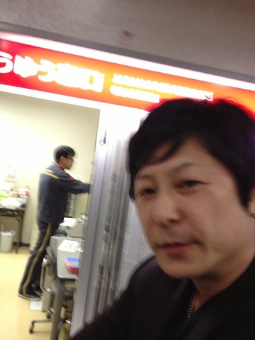
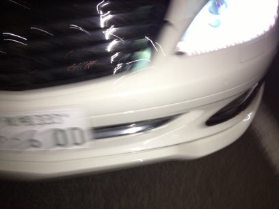

ハゲ裁判(1)郵便局の夜間窓口で
帰宅すると郵便局からの不在連絡票が届いていた。札幌簡易裁判所からの特別送達。山鼻郵便局まで取りに行き、その場で開封。暴行罪で起訴。つまり加害者・被告は私。なんでこんな事になっちゃんたんだろう。
山鼻郵便局・・ 一連の事件は2年前にここで始まった。
2014年10月5日 日曜日 午後8時すぎ
札幌市中央区、山鼻郵便局の夜間窓口にインターネットで買った商品を受け取りにやってきた。で、職員が私に向かって「どうぞ」と言うんで窓口に近づこうとしたら
「ジジイ、俺が先だ」
私から見て窓口の右側に立っていた男がそう言った。
郵便局には先客が数人いて、この男の存在にも気づいていたが、受付を済ませて郵便物が出てくるのを待ってる場合もあるじゃないですか。この男はこの時、窓口から離れて立っていて、私はこの男を押しのけて窓口に近づいたわけじゃないんですよ? それになにより職員に「どうぞ」と言われたから窓口に進もうとしたんです。
私は足を止め、男の方を見ました。 すると男は「お前ジジイだろ」とぬかしました。
Tシャツにネックレス、その上にジャケットを羽織った男。腕を組んで顔には笑いを浮かべている。

この男が一連の事件のもう一方の当事者、竹屋江満(たけやえみつる)。年齢は現在49歳。奇しくも「ミート・ザ・恥知らず」という記事で札幌市の皆さんに注意喚起した危険人物・田村智と同年齢と思われる。私はこの年齢の、ある特性を持った人間を引き寄せてしまう要素でも持っているのだろうか?
私は「あ、自分は間違って順番を抜かすところだったのか」と思い、素直に竹屋江の後ろに並んだ。しかし郵便局で順番を間違われれそうになったからって、見ず知らずの相手に「じじい」?
私は竹屋江に、まずは自分が順番を抜かしそうになったことを詫び、それからそういう言い方はないのではないかと抗議した。
すると竹屋江は私を見下ろし(みおろし、みくだし、どちらの読み方も合う。身長は私より10センチ以上は高い。後に警察官にそんなに高くはないはずだと言われたが)、不遜というか、例えようのない、目の前にいる私が人間に見えてないような態度を変えずに、「おれは事実を言ったまでだ『ジジイ』、『俺が先だ』とな。」「じゃあ『ハゲ』か? ハゲ坊主、海へ帰れ」
などと言ってきた。なんなんだこの男は? 私は怒りとかいうよりも、今まで見たことのない、こんな人間がいる、それも郵便局という場所で出会う事に驚愕や恐怖を感じての行動をとった。この事が自分の心の傷にならないように抵抗なければ。私は言い返した。
「お前まともな社会人なのか? 常識の無いクズめ! こんな所で人に絡んでうさ晴らしとは情けない奴だな!」
要約するとこうだが、こんな風にカッコよくスパッと言えたわけではない。グダグダになりながらカッコ悪く、周囲の人に恥ずかしいと思いながら精一杯抵抗を試みた。こんな時に何を言うかなんて練習してないし、こんな時でも相手の容姿をあげつらうなんて行為は私には恥ずかしくてできなかった。普段から他人のことをそんな風に見てないし。
竹屋江はそんな私を見てさらに「お前、口くせえ」(ああ、さっき半田屋でサンマの塩焼き食ってきたからな)。さらに「お前、どうも滑舌悪いと思ったらスキッパか」と嘲笑した。そして「その頭の皮膚の具合からすると、お前かなり若い時から禿げてたんだろうな、さぞかし苦労しただろう」と。
私は言葉の抵抗を続けた。
「お客さん! お客さん!」
窓口の中から局員が私を呼ぶ。私の頼んだ郵便物が来たようだ。私は局員が差し出した用紙に住所と氏名を記入する。そしてハッと気がついた。この非常識な男に住所氏名を見られたかも?
心配した通り竹屋江はすぐ隣に立っていた。自分も相手の事を記録しておきたい。私はiPhoneを取り出して男の顔を撮影した。

クソ、うまく撮れない。もう一枚、そしてもう一枚。竹屋江は始めは先ほどからの、余裕を見せているのか、どこか人間離れした不思議な態度を崩さなかったが、シャッターを3回押したあたりから態度が変わった。
「勝手に写真を撮るのは犯罪だぞ! そこの監視カメラも今お前が写真を撮ったのを見ているぞ!」とか言って取り乱して iPhoneを持っている私の手をはたいてきた。

私は竹屋江の目の前で110番通報した。
その後、コンビニ袋を持った連れの女が登場。私が見てないうちに用事を済ませていたのか、それともそもそも用事がなかったのか、警察官が到着するのを待たずに2人で郵便局を出て行こうとする。私は2人の先回りをして外に出る。郵便局前の路上には白い乗用車があった。これが男の車か? 予想通り2人はその車に乗り込もうとする。私は車の前に出てナンバープレートを撮影する。

体を張ってまで車を阻止することはできず、竹屋江と女は去っていった。
警察が到着。ナンバーを照会した警察官は私に「ベンツだぞ」と言った。
警察は現場の写真撮影を始め、郵便局員に状況を聞くなどする。1人の中年女性が私と警察官の所に近づいてきて「私、ずっと見てました。もう腹が立って、腹が立って」と言ってから去っていった。すみません、messyなザマをお見せして。
警察は当初、事件にしない方向で私を説得した。私は手を叩かれたこともそうだが、言葉の暴力について追求できないかと言ったが「"あの人は外でウンコばかりしている"と言って回れば名誉毀損になるがこれは違う」という説明をされた。
どうにか暴行罪の被害届を書き、持っていた判子を押し、受理された。しかしこの翌朝・・(続く)
追記17.6.11 この日のことは「新ハゲ裁判(24)新ハゲ裁判3D」で3D画像などを使いわかりやすく再現しています。それによってこの男の特性が新たに発見できました。そちらもご覧ください。追記終了
この事を初めて書いた記事『郵便局の夜間窓口で絡んできたこの男は誰?』(2014/10/16、今年2月に削除した)をこの『新産業ブログ』に掲載したことについて、後に私は名誉毀損の容疑をかけられ取り調べを受けた。その件は後で詳しく書きます。
何が犯罪に当たるのか、私に説明がないまま不起訴となったが、自主的に今回は竹屋江への主観的表現は強いもの(それは自分の受けた心的被害がどれほどだったかを表現するために必要だったのだが)を避けた。自分を偽悪的に書くのもやめた。こんな風に描かれた自分は恥ずかしいし、情けないが。
「なんか女の腐ったような奴が2人して」というのが一読しての感想だろう。相手が些細な物理的暴力を振るったのを見逃さず官憲の力を頼り、ってのも。しかし自分の経験上(何を経験したかも可能なら書いきたい)、今回はこうすることになった。
しかし後に、私は自ら自身を逆の立場に貶めることになる。
この内的経過の説明は難しい。これから始まる裁判で吟味される事でもあるし。自分で自分をカウンセリングするようなものだが、できるだけわかりやすく文章にしたい。
そしてそもそもこの事件をブログに書いた理由なのだが、リーガライズが進んだ現在、問題なのはこの手の暴力の蔓延なのではないだろうかという事。この手の暴力をどう防ぐか? 主に名誉毀損事件の部分でこの事を書いていく。
本文中、敬称は略しました。
ハゲ裁判(2)不覚にも被害届を取り下げてしまった→
← 目次に戻る